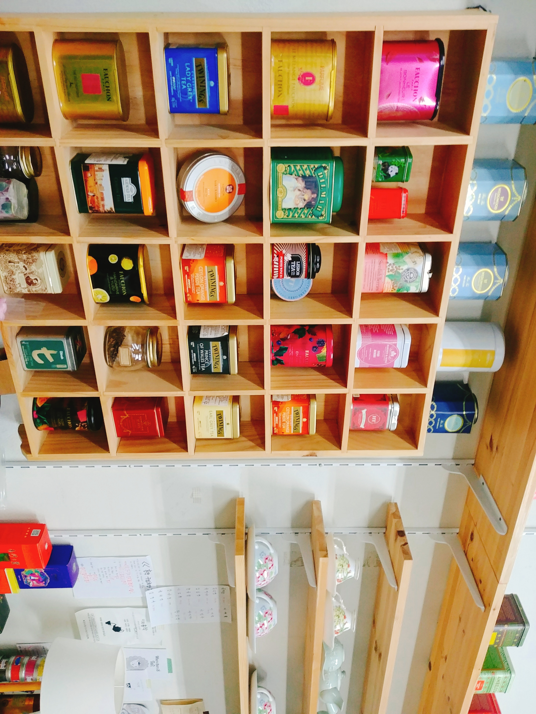

인사말
사회대 동아리 홍작은 2003년 사회대 단대 동아리로 출범한 이화 유일의 홍차 동아리이다.
홍작은 이화 내 홍차를 즐기는 살롱을 콘셉트로 지금까지 명맥이 이어오고 있으며
차를 잘 모르는 사회대인일지라도 함께 홍차의 향미와 역사에 대해 이야기를 나누며 일상 속에서
홍차를 즐기는 문화의 정착을 목적으로 운영되고 있다.
홍작은 차를 우리는 방법부터 밀크티 제조 및 홍차 시럽과 홍차 초콜릿,
홍차 밤조림 등 다양한 상품을 직접 제작하는 경험을 나누고 있으며 이를 바탕으로 주변인에 홍차를 알리고
다양한 방식으로 홍차를 즐기도록 권장한다.
사회대 동아리방 113호에는 차를 우리는 데 필요한
다양한 도구와 도자기는 물론 포트넘앤메이슨, 아마드티, 웨지우드부터 다양한 국가의 다양한 차를 보유하고 있으며
매달 정기 세션을 통해 이 차들을 만나보고 있다.
우리는 캠퍼스를 중심으로 다양한 자영업 사업장과도 협업하고 있으며 신촌 일대의 티하우스의 애프터눈티를 즐기고
티 클래스에 참여하는 정기 티하우스 탐방 세션도 운영하고 있다. 또한 정기 세션의 티푸드로
캠퍼스 주변의 베이커리와 과자점의 상품을 지원받아 소개하고 있다.
영국의 홍차 문화가 스콘, 쿠키, 클로티드크림 등 다과의 발전도 같이 가져왔듯, 차와 함께 즐기는 티푸드 또한
우리 동아리의 주요한 관심사이다.
홍작의 세션들은 차를 좋아하고 아끼는 부원들의 재능기부로 주로 운영되고 있으며
20년도부터 이 레시피들을 모아 문집에 기재하여 우리만의 홍차 즐기기 기록을 남기고자 한다.
홍작은 이렇게 누구에게나 열려있지만 모두 홍차를 일상적으로 즐기고 홍차의 다층적인 향미를 잘 알게 되며 무엇보다
자신의 차 취향을 탐구하는 사교의 장으로 자리매김하고 있다.
